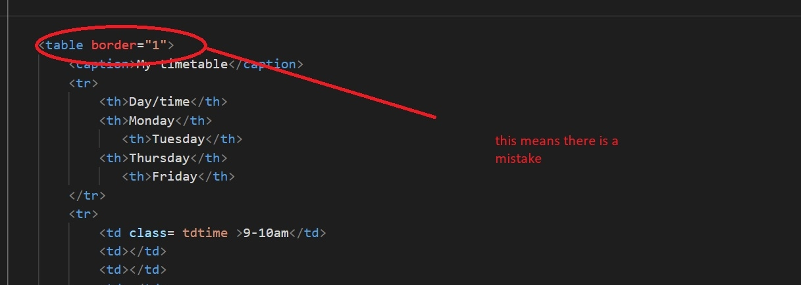
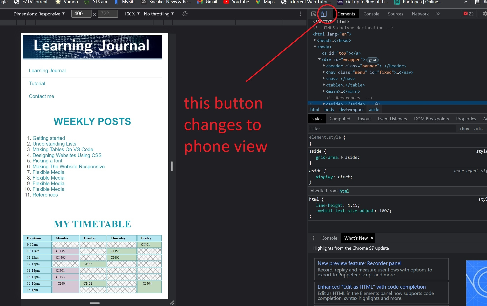
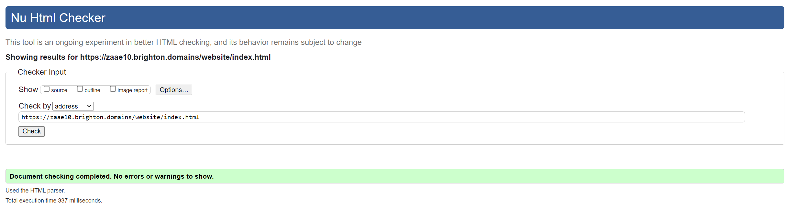

Week 1 - Getting started
Published on
This week I learned how to create a basic HTML website and host it on Brighton Domains. I’m trying to get used to the syntax but it's a bit hard for me because it looks different than python. I believe the most important thing I learned this week is to link to pages together and create hyperlinks. This is going to come in handy later on in the module if I want to link my website to another website. I also learned about HTML & CSS validation and my code has to be standardized and I learned how to check if my code is valid or not.
Picture © Ziad ElMissiry
Week 2: Understanding Lists
Published on
I started to understand HTML syntax but I'm not there yet. I aslo learned how to create an ...
- Ordered list
- Unoreded list
So far we've only learned HTML. We haven't started CSS. I think my website looks pretty plain. I’m very excited to start designing my website. I’ve also learned how to add images on my website. So I added a picture of how my website looked like on week 1 in the week 1 blog.
Week 3: Making Tables On VS Code
I’m getting pretty good at HTML and css. I started using vs code because it makes it easier to code. I also started working on my CSS stylesheet. I learned a couple of HTML tricks like making a table. I also added some color coding to the table. Purple boxes are online classes and green boxes are face to face classes. The hashes on the table are not an HTML or CSS element but a picture. I also started an online course on web development and HTML and CSS. I don't plan on finishing it but it’s a good resource.
Go to topWeek 4: Designing Websites Using CSS
We started to learn CSS. I created a CSS stylesheet and started to mess around with the colors and changing the fonts. What I found interesting is that CSS uses hexadecimals to determine color. Also we learned how to select target elements and style them other than just styling paragraphs and headers. You can go on the HTML sheet, give an element an ID or class and style it.
Go to topWeek 5: Picking a font
I remember when I was in school and my teachers required me to use 12 Times New Roman, they even required us to double space the page. I never liked that font i felt it was a bit too formal. That is why I decided against using it on my website. I decided on using sans-serif because I felt that the user would have an easier time reading it. I considered using drop cap letters at the beginning of every weekly reflection but I had to take it out because I was getting newspaper vibes. I also decided to go with the color blue as it’s been proven that the color blue is easier on the eyes.
Go to topWeek 6: Making The Website Responsive
This is the section I struggled with the most up until now. I used a line of code that adjusts the screen for mobile phones but it looks a bit funky on my actual phone. However, when I tested it on my ipad it worked fine. I also used Mobile Test to do some further testing. I’m going to have to go back and fix it because i’m not happy with it. Also I tested mobile using inspect elements and I think that its more convenient for a quick test to switch to mobile view by clicking on this button …..
 Go to topWeek 7: Flexible Media
This week we learned about flexible media. I had a screenshot of my website that I added on week 1 that looked awkward and was too long. I applied what I learned in class and made it fit to the page. However, I feel like it's too small. I’m trying to make it so if I hover over it or press on it the picture gets bigger. After hours of trying I decided to keep it like this for the time being. Also, this week we learned how to add a video to our HTML. I wanted to add a funny cat video to demonstrate my understanding of the material. However, I was told it’s unprofessional so here is a short video explaining HTML & CSS instead.
Week 8: Working on my tutorial page
I used flexbot cards and added them to my HTML and styled them on my CSS. I used the same color I use for my headings for the border and I picked a light shade of blue for the card’s background color. The cards were not fighting properly on the page because my page wasn’t fully resolved because I messed up somewhere on week 6 so I had to go back and fix it. It turns out that I had an extra div element on my page and was missing the nav element and that same mistake was on my index and contact page as well. After I fixed it, the card worked properly.
Go to topWeek 9: Forms contact me page
I followed the tutorial for week 9 and made a form to add to the contact me page. But I didn't like how it looked in the tutorial. I thought that it would look better if it was all in one div element so all the forms can be in one box. I used w3schools and found a design I liked and tweaked the code on their website a little and kept running it until it worked. They have that amazing feature where you can write and run the code online which was really helpful. It’s an amazing resource you should definitely check out.
Go to topWeek 10: Cleaning up my code
This week I focused on cleaning up my code and adding a couple of fun elements to it. I added an element called sticky to my tutorial page. I followed a Youtube tutorial it’s reference is on the tutorial page. I added it to all the h2 elements, and as you scroll the h2 goes down as well until it reaches the next heading. I added a bunch of copyright free images as well to the tutorial page. I also went back and cleaned up the code by adding annotations to the CSS explaining what every bit of code is for. I also added some annotations to the HTML. Then I used the validation tool to check if my code is valid here is a picture....
